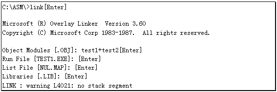

早期的计算机运算速度很慢而且内存也很小，象最早的个人电脑Altair只有4KB的内存。所以早期的程序设计者所追求的目标是代码越短越好，算法越快越好。他们往往要一个字节一个字节的精心编码，而且喜爱在程序中使用很离奇的算法。这样做虽然使程序能高效运行，但是程序员的源程序恐怕只有他们自己才能读懂，经验不多的人是难于改进这些程序的。
随着电子技术的发展，计算机的速度越来越快，内存也越来越大，这使得现代的软件设计理论也就有了很大的变化。流行的观念认为好的程序首先应该是逻辑清晰，结构严谨，能够适应于不同水平的程序设计者对其加以维护，其次才考虑空间与时间问题。因此把一个软件分解成多个具有独立功能的模块分别设计，最终在组合起来的程序设计技术已经为人们所接受。
另外，编写程序是一件十分费心费力的工作，特别是汇编程序。对于一些小型的软件如果由一个人单独编写还可以接受，可如果是开发象WINDOWS这样的大型操作系统，那可就要由很多人合作才行了。
由于上述原因所以今天的软件设计主要采用"模块化"程序设计技术。所谓"模块化"指得是把一个程序分解成多个具有独立功能的部分，分给多个程序员同时编写，最后再把这些部分连接在一起形成完整的程序。
下面给出的这个程序例就是应用了模块化程序设计技术，程序本身有些老掉牙了，只不过是将键盘上输入字符的扫描码与ASCII码显示在屏幕上而已：
EXTRN hex2asc: far ；告之LINK程序HEX2ASC是位于另一个
；源程序中的过程，且为FAR属性
data segment PARA PUBLIC 'DATSEG'
assume ds:data
msg db 'Module program demonst ration',0dh,0ah
db 'Press any key,I will t ell you ',0dh,0ah
db 'the scan-code and ASCI I.',0dh,0ah,24h
data ends
code segment PARA PUBLIC 'CODE'
assume cs:code
main proc far
push ds ；初始化堆栈
sub ax,ax
push ax
mov ax,data ；初始化DS寄存器
mov ds,ax
mov dx,offset msg ；输出字符串MSG
mov ah,9
int 21h
next:
mov ah,0 ；等待键盘输入
int 16h
call hex2asc ；调用HEX2ASC输出扫描码及ASCII码
cmp al,1bh ；是ESC键吗？
jnz next ；若不是ESC键，转NEXT继续接收按键
ret ；若是ESC键则结束进程
main endp
code ends
end main
TEST2.ASM
PUBLIC hex2asc ；告之编译程序过程HEX2ASC
；用于被外部的过程调用
data segment PARA PUBLIC 'DATSEG'
assume ds:data
ascii db '0123456789ABCDEF'
data ends
code segment PARA PUBLIC 'CODE'
assume cs:code
hex2asc proc far ；HEX2ASC是一个具有FAR属性的过程
push ax ；保存寄存器
push bx
push cx
mov bx,offset ascii ；BX寄存器指向ASCII码表
mov cx,4 ；显示4位十六进制数
loop1:
push cx ；CX寄存器压入堆栈暂存
mov cl,4 ；准备处理4个Bit
rol ax,cl ；将AX寄存器的高4位移至低4位
push ax ；暂存移位后的结果
and ax,000fh ；保留AX寄存器低4位
xlat ；从ASCII码表中取得字符
mov ah,0eh ；并调用10H中断的0EH功能输出
int 10h
pop ax ；从堆栈中取回移位后的结果
pop cx ；和CX寄存器中的计数值
loop loop1 ；继续处理下4位
mov ax,0e0dh ；输出回车、换行符
int 10h
mov al,0ah
int 10h
pop cx ；恢复寄存器
pop bx
pop ax
ret ；返回主过程
hex2asc endp
code ends
end hex2asc
给出的两个源程序其实是一个程序的两个部分，这两个部分编译之后要连接到一起。具体方法很简单，首先将两个文件分别编译成两个OBJ目标文件，然后按下述方法应用LINK.EXE程序进行连接：

连接程序LINK.EXE会把TEST1.OBJ和TEST2.OBJ组合在一起，生成的可执行文件默认的文件名是第一个OBJ文件的名字，本例是TEST1.EXE。其实这才是LINK程序真正的用途，以前使用LINK程序将单独一个OBJ文件转换为可执行文件只是走走形式而已。
如果使用TLINK程序，则操作会更简单一些：
C:\ASM\>tlink test1 test2[Enter]
通过这个实例，我们可以看出构成程序的两个模块其实就是两个完整的程序，而实现模 块之间的组合主要依靠几个新的伪操作。再讨论新的伪指令之前，我们先将以前讲过的"SEGMENT"伪指令更深入地挖掘一下。